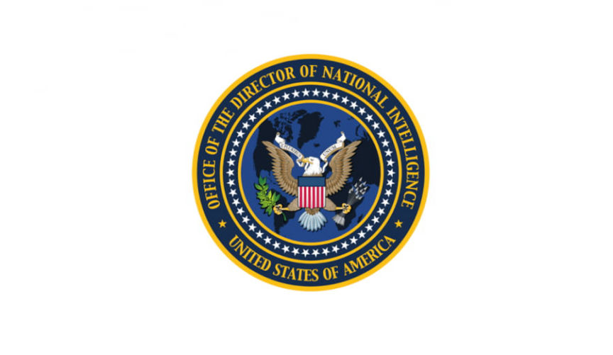
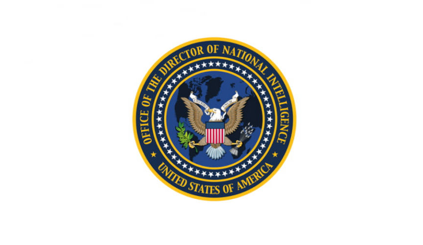

US Government Working on AI-Powered Stylometry Technology
~2 min read | Published on 2022-10-01, tagged AI, General-News using 390 words.
The Intelligence Advanced Research Projects Activity (IARPA) is working on a program that will use “artificial intelligence technologies capable of attributing authorship.”
Put another way: the government is creating a program that uses artificial intelligence to identify or fingerprint anonymous authors.
IARPA is the research and development arm of the Office of the Director of National Intelligence (ODNI).

“Each of the selected performers brings a unique, novel, and compelling approach to the HIATUS challenge,” said program manager Dr. Tim McKinnon. “We have a strong chance of meeting our goals, delivering much-needed capabilities to the Intelligence Community, and substantially expanding our understanding of variation in human language using the latest advances in computational linguistics and deep learning.”
The DNI press release:
“WASHINGTON, D.C. – The Intelligence Advanced Research Projects Activity (IARPA), the research and development arm of the Office of the Director of National Intelligence, today announced the launch of a program that seeks to engineer novel artificial intelligence technologies capable of attributing authorship and protecting authors’ privacy.”
“The Human Interpretable Attribution of Text Using Underlying Structure (HIATUS) program represents the Intelligence Community’s latest research effort to advance human language technology. The resulting innovations could have far-reaching impacts, with the potential to counter foreign malign influence activities; identify counterintelligence risks; and help safeguard authors who could be endangered if their writing is connected to them.”
The program’s goals are to create technologies that:
Perform multilingual authorship attribution by identifying stylistic features — such as word choice, sentence phrasing, organization of information — that help determine who authored a given text. Protect the author’s privacy by modifying linguistic patterns that indicate the author’s identity. Implement explainable AI techniques that provide novice users an understanding, trust, and verification as to why a particular text is attributable to a specific author or why a particular revision will preserve an author’s privacy.[/list] “Through a competitive Broad Agency Announcement, IARPA awarded HIATUS research contracts to the following lead organizations, which together bring more than 20 academic institutions, non-profits, and businesses into the program:
Charles River Analytics, Inc. Leidos, Inc. Raytheon BBN* SRI International University of Pennsylvania University of Southern California “The HIATUS test and evaluation team consists of Lawrence Livermore National Labs, Pacific Northwest National Labs, and the University of Maryland Applied Research Laboratory for Intelligence and Security.”
IARPA Kicks off Research Into Linguistic Fingerprint Technology | www.dni.gov, archive.is, archive.org
Put another way: the government is creating a program that uses artificial intelligence to identify or fingerprint anonymous authors.
IARPA is the research and development arm of the Office of the Director of National Intelligence (ODNI).

Office of the Director of National Intelligence
“Each of the selected performers brings a unique, novel, and compelling approach to the HIATUS challenge,” said program manager Dr. Tim McKinnon. “We have a strong chance of meeting our goals, delivering much-needed capabilities to the Intelligence Community, and substantially expanding our understanding of variation in human language using the latest advances in computational linguistics and deep learning.”
The DNI press release:
“WASHINGTON, D.C. – The Intelligence Advanced Research Projects Activity (IARPA), the research and development arm of the Office of the Director of National Intelligence, today announced the launch of a program that seeks to engineer novel artificial intelligence technologies capable of attributing authorship and protecting authors’ privacy.”
“The Human Interpretable Attribution of Text Using Underlying Structure (HIATUS) program represents the Intelligence Community’s latest research effort to advance human language technology. The resulting innovations could have far-reaching impacts, with the potential to counter foreign malign influence activities; identify counterintelligence risks; and help safeguard authors who could be endangered if their writing is connected to them.”
The program’s goals are to create technologies that:
IARPA Kicks off Research Into Linguistic Fingerprint Technology | www.dni.gov, archive.is, archive.org